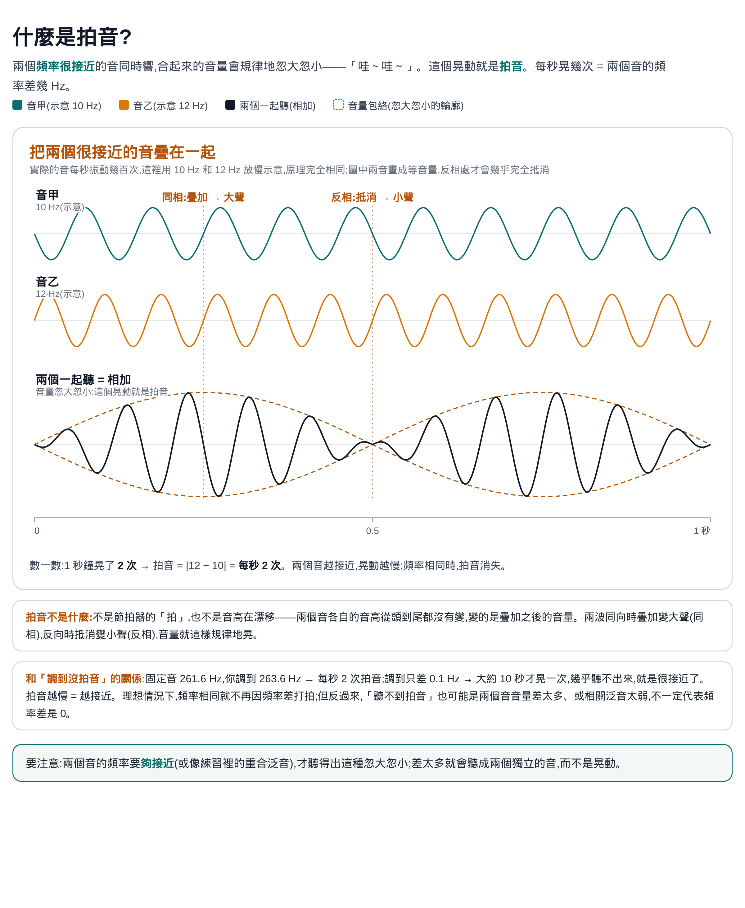
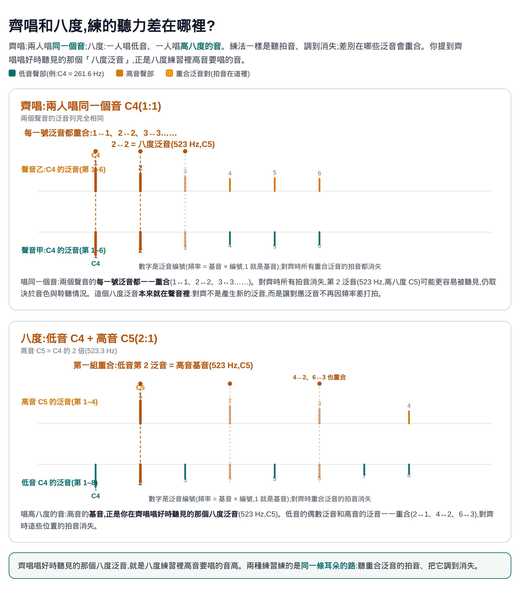
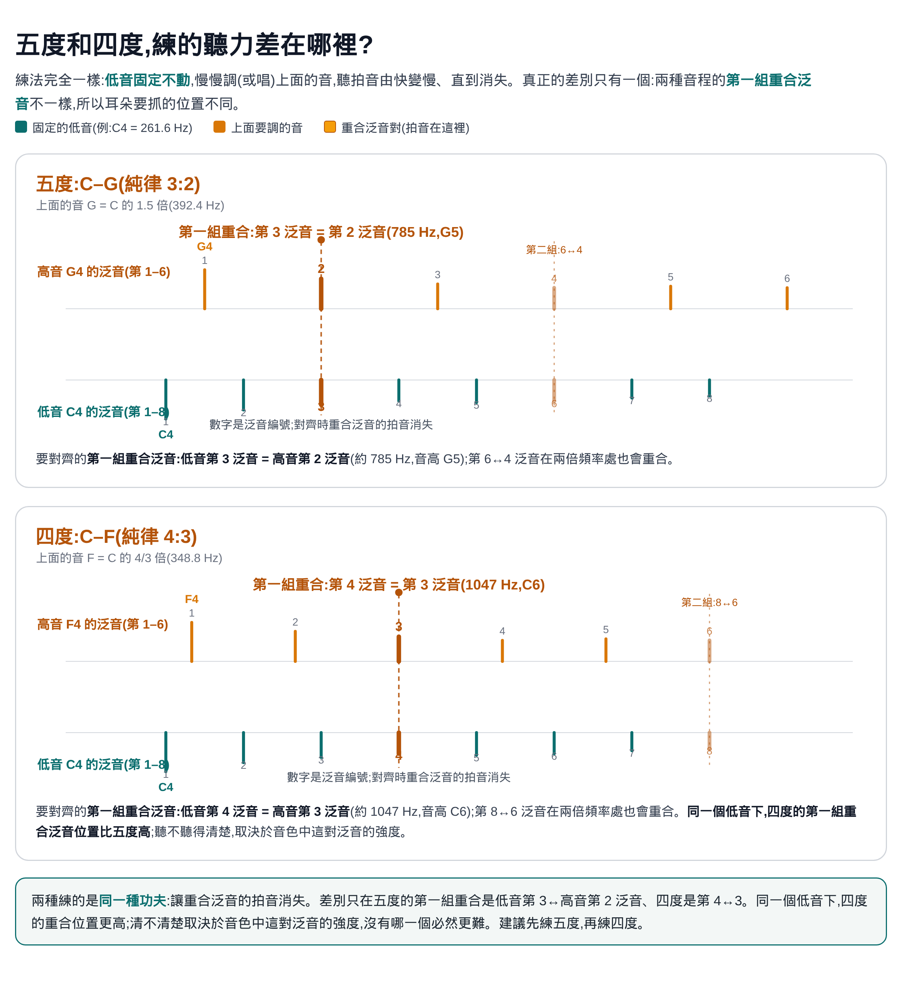

調到沒拍音 使用說明
練唱室 Practice Room · 純律音準聽力練習
這是什麼
一個練「聽拍音、調到沒拍音」的純律音準練習。固定音會一直響,你要把另一個音調(或唱)到和它完全對齊——對齊時拍音消失,就是純律;反過來,聽不到拍音也可能是音量差太多或相關泛音太弱,不一定代表頻率差是 0。有四種練習:齊唱(同音 1:1)、八度(2:1)、五度(純律 3:2)、四度(純律 4:3)。兩種玩法:滑桿調音(不用麥克風)和開口唱(用麥克風,真的唱)。
原理圖解
先懂原理,再操作練習:拍音是什麼 → 齊唱與八度對齊哪些泛音 → 五度與四度對齊哪些泛音。三張圖都是白底,方便列印。



拍音和 cent(音分)有什麼不同
cent(音分)是量「音高差多少」的單位:把一個半音平均分成 100 份,1 份就是 1 cent;一個八度 = 12 個半音 = 1200 cent。它是相對的距離:同樣 5 cent,在低音和高音實際的頻率差(Hz)不一樣。
拍音數的是「每秒晃幾次」,等於兩個很接近的頻率(例如一對重合泛音)相差幾 Hz,是實際的晃動。同樣每秒 1 次的拍音,低音換算成 cent 比較寬、高音比較窄。這個 app 開口唱的及格標準是容差帶:至少 70% 的演唱時間,音高要在綠色帶內(±cent,預設 ±15,進階設定可調 5–200)——帶內就算準,帶外才算偏;練習時仍建議用耳朵聽拍音對齊。cent 用來告訴你結果偏多少:滑桿調音的成績回饋、音高線的刻度和容差帶,用的都是 cent。滑桿模式的及格誤差是 ±2 cent,大約是半音的 1/50。
舉例:純律五度(3:2)約 702 cent,鋼琴十二平均律的五度是 700 cent——差了約 2 cent,這就是為什麼純律要用耳朵聽拍音調,不能照鋼琴對。
快速開始(滑桿調音)
- 「選練習」:齊唱、八度、五度,或四度。
- 「選一個音」:先選音域(低 C2–B2 · 超低音域、中 C3–B3 · 男低音域、高 C4–G4 · 共用音域),再選音名(最高音域只到 G4)。
- 按「開始聆聽」:固定音會一直響。
- 拖動滑桿調整第二個音,聽拍音越來越慢、直到完全消失。滑桿兩旁的 − ＋ 可以微調。
- 按「確定」看成績:告訴你偏了幾 cent(音分的百分之一個半音),誤差 ±2 cent 內算對齊。
- 用「你的答案」「正確答案」按鈕比較聽聽看,再按「再來一次」繼續。
三種練習在練什麼
每種練習對齊的泛音組合不同。泛音編號 = 頻率是基音的幾倍,第 1 泛音就是基音:
| 練習 | 純律比 | 你調(唱)的音 | 第一組重合泛音 |
|---|---|---|---|
| 齊唱 | 1:1 | 和固定音同音 | 每一號泛音都重合(1↔1、2↔2、3↔3……) |
| 八度 | 2:1 | 固定音的高八度 | 低音第 2 泛音 = 高音第 1 泛音(基音);4↔2、6↔3 也重合 |
| 五度 | 3:2 | 固定音上方五度 | 低音第 3 泛音 = 高音第 2 泛音;6↔4 在兩倍頻率處也重合 |
| 四度 | 4:3 | 固定音上方四度 | 低音第 4 泛音 = 高音第 3 泛音;8↔6 在兩倍頻率處也重合 |
拍音 = 兩個很接近的頻率疊加時,音量「哇～哇～」的晃動;練習裡要聽的,是重合泛音之間的拍音。越接近,晃動越慢;完全對齊時消失。重合泛音聽起來清不清楚,取決於音色中這對泛音的強度;四度的第一組重合泛音位置比五度更高,如果一開始抓不到,可以先練五度。
音量平衡(滑桿模式,五度):五度練習中,你調的那個音(目標音)比固定音小聲約 4 dB,泛音比例不變;齊唱、八度、四度音量不變,「開口唱」也不變。這只是聽感上的平衡,計分方式沒有改。
滑桿調音的判定
- 誤差 ±2 cent 內算「完全對齊」;否則告訴你偏高或偏低幾 cent。
- 每次的零點位置是隨機的(也不會停在正中央),練的是耳朵,不是記滑桿位置。
開口唱(用麥克風真的唱)
- 按「開啟麥克風」並允許權限,看到「麥克風已就緒」。
- 按「開始唱」:先聽固定音,準備好再開口,唱練習指定的音(齊唱=同音、八度=高八度、五度=上方五度、四度=上方四度)。
- 偵測到你的聲音才開始計算,沒有時間限制,唱完按「停止」看結果。
- 你的聲音會即時送進耳機,和固定音混在一起,讓你聽出拍音:準不準主要靠聽:理想上,唱到拍音消失就是對齊;但聽不到拍音也可能是音量差太多或相關泛音太弱,不確定時可以打開音高線對照。
- 計分:從開口到停止,至少 70% 的時間音高在容差帶內(綠色帶,預設 ±15 cent)就過關(開口後最前面約 0.3 秒不計分)。帶內算準、帶外算偏;容差寬度和及格比例都可以在「進階設定」調整。
- 診斷報告:唱完按「診斷報告」會下載一份 PDF 報告:這次過關了沒、唱了多久、多少在容許範圍內、偏高或偏低,以及收音和偵測有沒有問題、可以怎麼調。資料太少會直接說;詳細數據收在報告附錄,平常不用看。
- 音高線(預設關閉):勾選「顯示音高線」可以用線條輔助判斷——中間橫線是目標音,淡色帶是容差範圍,你的音高在線上方 = 偏高、下方 = 偏低,在容差內呈綠色。關掉就可以純靠聽覺練習。
進階設定(可不動)
在「開口唱」模式展開「進階設定(可不動)」。線的平滑只改變線的樣子,計分永遠用原始音高,不會因為平滑而放水;容許範圍和及格比例會改變計分標準。唱的途中也可以調,按停止時用最後的設定計分。這些設定只在這次打開頁面有效:重新整理頁面或按「恢復預設值」都會回到預設。
容許範圍
綠色容差帶的半寬 ±cent(預設 ±15,可調 5–200,5 一檔):帶內算準、帶外算偏,畫面上的綠色帶就是判分標準。音高線圖上下至少顯示 ±100 cent,容差加大時畫面會自動加寬。
線的平滑程度
選項(下拉選單):
- 3 點(預設):取目前讀數加上最近 2 個有聲讀數,共 3 個取中位數。線條適度穩定,又跟得上音高變化,多數情況建議用這個。
- 5 點:取目前加上最近 4 個有聲讀數的中位數。線更穩、較不會突然跳動,但音高改變時反應較慢、較鈍。
- 關閉(= 1 點):不平滑,直接畫出每個原始讀數,可以看到最真實的細小起伏。
- 程式每 0.05 秒分析一次音高(每秒約 20 個讀數)。「有聲讀數」才算進平滑窗口;沒唱或偵測不到音高的時段會跳過,不會拉進來平均。
- 取的是中位數,不是平均,所以偶爾一個跳掉的讀數不會把線拉偏。
- 這個設定只影響畫面上線條的顯示,不影響計分。計分永遠用原始音高,平滑不會讓你比較容易及格。
- 邊界例外:如果平滑會把某個點拉到綠色帶的錯誤一側,該點改用原始位置畫,線條進出綠色帶永遠和判定一致;離開邊界後照常平滑。
- 設定只在本次開啟頁面有效:重新整理頁面或按「恢復預設值」都會回到預設的 3 點。
- 音高線本身預設是關閉的(「顯示音高線」未勾選);打開音高線後,才會用這裡設的平滑程度來畫。
及格比例
預設 70%,可調 50–95%(5% 一檔):從開口到停止,容差內的時間要達到這個比例才過關。
隱私與裝置需求
- 滑桿調音不需要麥克風,只需可播放聲音的瀏覽器;開口唱需要麥克風(建議戴耳機)。
- 所有聲音分析都在你自己的裝置、這個網頁裡進行,不會上傳到任何地方。
- 建議使用最新版 Chrome、Edge 或 Safari。
版本與授權
- App 版本:v2.7(2026-10;五度滑桿目標音音量 -4 dB)
- 台灣合唱音樂中心製作 · 練唱室 Practice Room
- CC BY-NC 4.0 · 教師與教育工作者可用於教學、示範與學生練習,課程是否收費皆可;詳見 tcmctw.github.io